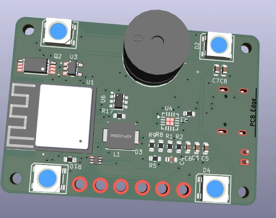
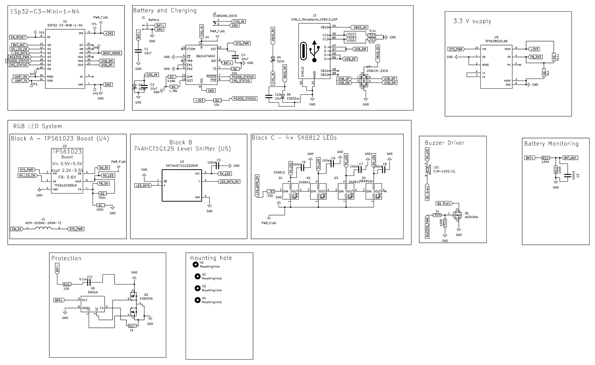
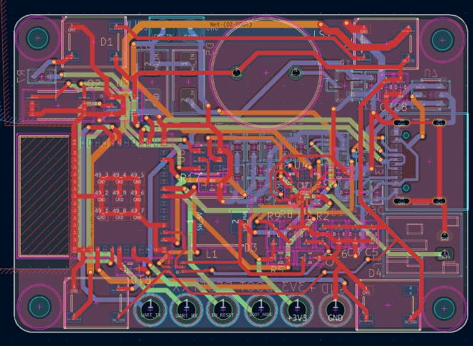
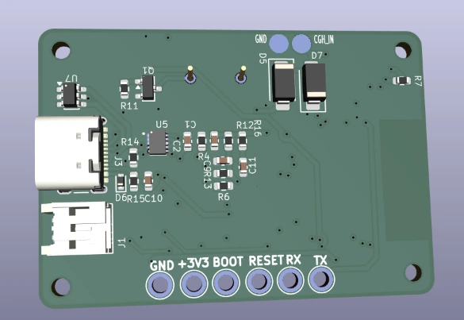

Home / Projects / Parcel-Tracking System / Beacon PCB
Beacon: ESP32-C3 Parcel Beacon, 4-Layer PCB
A compact four-layer board that charges from a dock or USB-C, lights four RGB LEDs and sounds a buzzer, delivered with a complete JLCPCB-ready package.

- Layers
- 4
- Size
- 48.8 × 33.8 mm
- Module
- ESP32-C3-MINI-1-N4
- Charger
- BQ24074
- LEDs
- 4× SK6812
- Link
- ESP-NOW
- Tool
- KiCad
- Scope
- Schematic + PCB
01The brief
A client had working prototypes of a small beacon that clips onto a parcel and flashes and beeps on command from a paired gateway. He wanted a professional custom PCB that works as the basis for later production in larger quantities.
Requirements: ESP-NOW communication, four bright addressable RGB LEDs, a passive buzzer, a rechargeable LiPo with power-path management, USB-C for charging and programming, battery voltage monitoring, test pads and two charging contacts for a dock.
02My role
- Written review of the client specification: power architecture, LED rail, RF keep-out and sleep strategy
- Schematic capture and component selection, with several client review rounds
- 4-layer placement and routing, with the client reviewing the placement before routing
- ERC and DRC verification
- Manufacturing package: Gerbers, drill files, BOM with LCSC numbers, CPL, JLCPCB-ready set and a complete-PCB STEP model
03Schematic
The design is split into clear blocks: ESP32-C3 module, battery and charging, 3.3 V supply, a separate RGB LED system, buzzer driver, battery monitoring and battery protection. Click the image to open it full size.

04Design decisions
- Power path. A BQ24074 charger with power-path management takes input from the dock contacts and from USB-C, with Schottky diodes keeping the two sources apart.
- 3.3 V rail. A TPS63802 buck-boost holds 3.3 V across the whole LiPo voltage range.
- Separate 5 V LED rail. A TPS61023 boost feeds the four SK6812 LEDs and can be switched off by the ESP32. A 74AHCT1G125 level-shifts the LED data line to 5 V.
- Charger thermistor pin. With no thermistor fitted, the BQ24074 TS pin is tied to ground through 10 kΩ, as its datasheet allows.
- USB protection. A USBLC6-2SC6 on D+ and D− and a TVS on VBUS protect the externally accessible USB-C port.
- Passive buzzer. A CEM-1203(42), 12 × 12 × 8.5 mm, is driven by a MOSFET from an ESP32 PWM pin, so firmware can play different tone patterns.
- Battery care. A DW01A and dual-MOSFET protection stage, plus a divider to an ADC pin for battery voltage monitoring.
- Antenna area. The module antenna sits at the board edge with no copper or routing in its keep-out.
- Built for the enclosure. The four LEDs sit symmetrically under the diffuser, the buzzer has a clear acoustic path, USB-C is reachable from outside, and two gold contacts on the back meet the charging dock.
05PCB design


06Verification
ERC reported 0 errors and 0 warnings, and DRC reported no violations and no unconnected items, before the package was delivered. The client confirmed both results in his own review of the files.
07Delivery package
- Full KiCad project
- Schematic + PDF
- PCB layout
- Gerbers, all layers
- Excellon drill files
- BOM with LCSC numbers
- CPL / pick-and-place
- JLCPCB-ready set
- Complete-PCB STEP
- ERC report
The client audited the package against a checklist and every point was closed.
08Client feedback
Tahir did an excellent job on my PCB project. He was very responsive, professional, and willing to make every requested adjustment until the final package was complete. I especially appreciated his attention to detail, clear communication, technical understanding, and the complete documentation of the project files.
mauriziomo · Germany · Fiverr client, Beacon PCB phase
09Project result
A compact, production-oriented four-layer PCB with clean ERC and DRC and a complete manufacturing package. Its enclosure is a separate case study.